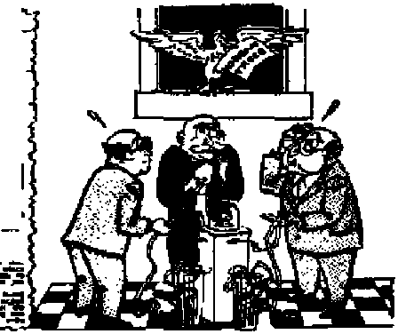
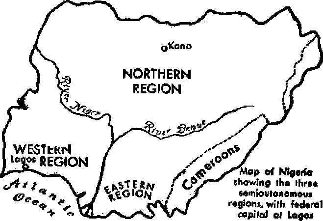

OCTOBER 22, 1953 semimonthly
News sources -Hiat arc able to keep you awake to the vital issues of our times muat be unftiiered by censorship and selfish intwegts. 41Awake 1° has no fetters. It recognises facts, faces facts, is free to publish facts. It is not bound by political ambitions or obligations; it la unhampered by advertisers whose toes must not be trodden on; It is unprejudiced fry traditional creeds. This journal keeps itself free that it may speak freely to you. But it does not abuse its freedom. It maintains Integrity to truth.
44Awake I** uses the regular news channels, but is not dependent on them. Its own correspondents are on all continents, in scores of nations. From the four corners of the earth their uncensored, on * the -scenes reports come to you through these columns. This journal^ viewpoint is not narrow, but is international. It is read in many nations, in many languages, by persons of all ages. Through its pages many fields of knowledge pass in review—government, commerce, religion, history, geography, science, social conditions, natural wonders—why, its coverage is as broad as the earth and as high as the heavens.
“ Awake I” pledges itself to righteous principles, to exposing hidden foes and subtle dangers, to championing freedom for all, to comforting mourners and strengthening those disheartened by the failures of a delinquent world, reflecting sure hope for the establishment of a right* eous New World.
Get acquainted with "Awake!" Keep awake by reading “Awake!”
Published Semimonthly Ht WATCHTOWER BIBLE AND TRACT SOCIETY. INC.
117 Adama Street Brooklyn 1, K. T., U. S. A,
N, H. KNOBB, PreHdflnt Grant Sc iter, Secret fltv
Printing thia issue: 1,1M,000
Five cents a copy fltHlttinm should be eent tn office in yonr country in compliance with regulation^ to guarantee ■are delivery of money. Remittances ire accepted at Brooklyn troffi countries where no office is located, by international maney order only, Subscription rotes In different, eountries are here stated in local currency. Notice if nplrotltn (with renewal blurti le gent at least two Issues, before subscription es-piree, Change of iHtai when rent to our office may be expected effective within we month, Bend your old 11 **11 1] new address.
Art at Man* 3, 1879. Prints in tj. B, A
Lm|m*h In which thh orotuljit is piblliM: atwiiMiithlr-—Afrltuoa, Enrich, FlnntolL French, German, Holland^*. Norwegian, Spanish, Swedish Monthly—Danish, Greek, Portuguese, Ukrainian.
Oflkq Yearly subecription Bate
AflreriM, U.S., UT Adams St , Brooklyn 1, N.Y $1 Airtrilli, 11 BemlMd Rd, Strethfleld, N S W. 8s Gunda, 40 Irwin Art-. Toronto 5, Ontario |1 England, 34 Craven Terrace, London, W, 9 7a SMtli AfffMr Private Big, P.O, NUnderonleln,
TrinEvaa) 7s
fctrmi ii Mcomtt-clus milter nt Brooklyn, N. Y
CONTENTS
World Government on the Horizon
The Road Runner: Sprinter Extraordinary 9
$10 for Sweets—$6 for the Dentist
The Rise and Fall of the
Truth—Not Tradition—Sets Men Free 24 “Your Word Is Truth”
The Purpose of Christ’s
Jehovah’s Witnesses Preach in All
Volume XXXIV
Brooklyn, N. Y., October 22, 1963
Number 20
World Government on the Horizon
WHAT has the United Nations accomplished? No doubt a good many people would like to know the answer to that question. And it may not be too farfetched to say that members of the U.N. themselves are not entirely clear as to their accomplishments. Their present status is described by some as nonplused. It is obvious that the U.N. has not achieved its avowed purpose to maintain international peace and security. Nor can it be said that a closer co-operation and a better understanding among nations has resulted from U.N. conferences. Much to the contrary, the world has never been so disunited and confused on vital issues. Things are all but peaceful at the "Peace Headquarters?’
And, too, there are other appropriate questions that could be asked. For example: What has the U.N. done to lessen world tension? Loosen the grip of fear that hangs over the world? To put an end to the arms race? Squelch aggression and the aggressor? What has it done to eliminate food shortages? Racial discrimination? Disease or war? Virtually nothing!
Once upon a time the U.N. was hailed as The best hope for world peace? 'the only hope for peace? and the 'last hope for peace? But what has happened to this “peace” organization? The peace dove hovered over the Korean battlefields for over two years, while thousands died. The once honorable U.N. is being accused today of “unmoral diplomacy writing, with deceptive phrases, equivocations and quibbles.” The size of the proverbial shoe that the U.N. appears to be wearing, quite uncomfortably at present, is well described by David Lawrence, editor of the U.S. News c£ World Report, Said Mr. Lawrence in the July 3,1953, issue:
“The United Nations as an organization designed to enforce peace in the world has come to a humiliating end. Like its predecessor—the League of Nations—it has been killed by statesmen faithless to the ideals they had once professed. The Korean war was in our times the acid test of the power of an international organization to operate as a military alliance against aggressors. When the showdown came, one set of members was arming against another set in Europe. Other members were claiming to be 'neutral’ in Asia. Still others were deliberately furnishing the aggressors with arms to help kill the soldiers of other states resisting aggression. The U.N. lacked the moral courage to denounce Soviet Russia for aiding the common enemy—the Communist Chinese and North Korean Communist armies*
“No more flagrant example of the decay of international morality could be cited than the concerted behavior of the notewriters in the foreign offices of Great Britain, France, the United States, Canada and India in their recent assault on the little government of Korea. What was its crime? It refused to keep its own brothers from the North in further bondage while the Communists were to send in their agents to 'brainwash’ those same prisoners—all this under the auspices of a commission of five countries, with the deciding vote held by a pro-Communist government, calling itself 'neutral? Was it so ignoble on the part of Korea—not even a U.N. member —to assert its sovereign right as an ally to act against such palpable trickery? How can the smaller nations of the world ever look again to the larger nations for justice when, with a might-makes-right flourish, the major powers ignored the protest of the Republic of Korea, which had lost 200,000 soldiers in battle and more than 1,000,000 civilians in the ravages of war?
"What, then, has the U.N. accomplished? It has failed to discipline the principal aggressors. It has succeeded only in bullying the principal victim of aggression—forcing it to choose between a dishonorable armistice and national suicide/'
A Silver Lining of Hope
The situation would be grave indeed were the U.N. the only hope for peace. We have God to thank that it is not. Long ago Jehovah purposed a government of peace for righteous mankind. He appointed its king and anointed him as the Prince of Peace, and foretold that of the increase of his government and peace there would be no end. The new world’s King, Jesus Christ, taught his disciples always to pray for it, that God’s will would be done on earth as it is done m heaven. This kingdom is mankind’s hope and the agency that will usher in peace.—Psalm 33: 8-12; Isaiah 9: 6, 7; Matthew 6: 9, 10.
How will Jehovah God accomplish that which the U.N. has failed to do, namely, establish a lasting government of peace? This is how: Through his King Christ Jesus he will destroy all wickedness from the earth in the coming battle of Armageddon. (Paalm 145:20; Revelation 16:13-16) As he ushered Noah and his family safely through the flood, so God will safely guide a great crowd of people through Armageddon, and these survivors will be the first to enjoy the blessings of the new earth. Theirs will be a new system of things. For Jehovah will be their Judge, Lawgiver and King. (Psalm 19: 7-11; Isaiah 33: 22) Unlike the International Court of Justice of the United Nations which lacks compulsory jurisdiction over nations or individuals, the new-world government will reach out speedily and execute Jehovah’s judgments, for “righteousness and justice are the foundation of thy throne.” (Psalm 89:14, 4m. Stan, Ver.) The new world’s King with myriads of his holy angels will enforce the peace. These angels wiif also guide and protect mankind.—Psalm 34:7; 68:17; Revelation 9:16.
Blessings of the new-world rule will be manifested everywhere. The knowledge of Jehovah will fill the earth as the watery cover the sea. The divine mandate to fill the earth with righteous offspring will be faithfully carried out. Parents will not labor in vain, nor bring forth for calamity, as is the case today. Jehovah will restore man’s dominion over the lower animals. Thorns and thistles will he clear away and the earth will yield its increase. Mankind will come to enjoy perfect health. Even the graves will yield their dead, and loved ones will be reunited. Death, then, will be destroyed. Wars will cease for all time. Peace and contentment will fill the earth. —Isaiah 11: 6, 7, 9; 33: 24; 35: 1, 2, 7; 55:13; 65: 23; Micah 4: 3, 4; John 5: 28, 29; 1 Corinthians 15: 24-26.
Neither the U.N. nor any other human scheme of things can ever promise you these blessings. These are yours to Be had by placing your trust in Jehovah and his word of promise.—Isaiah 46:10,11; 55:11.
MANY years ago someone wrote, “When war is declared, Truth is the first casualty.” Truth is suppressed, facte are misrepresented, news reports are cleverly slanted, distorted and fabricated by both sides to suit political expediency. As this is true in other wars, so it is true with the Korean conflict. Millions of people in what is termed the “free world” have been alerted tn the menace of the Communist East and Its tyrannical subversion of peace on earth, but are they all equally aware of the warmongers among the revived Nazis, resurgent fascist* and resuscitated Japanese imperialists7 Has it ever occurred to them that there may be some who actually fear peace more than they fear war?
People generally are misinformed, tragically deceived and woefully ignorant of what is happening In the world. Never before have so few fooled so many about so much. When war makes millionaires who own or influence means of disseminating information,' there is no way of being sure that what you hear is reliable.
Big business is doing well. Profits of giant corporations are soaring to
fwfiaUul Nat
MOSTSEVERESTOCKMARKET DECUNE SINCE OCTOTER ’51 AMID KOREAN PEACE MOVES
]<■■•■ RiAfcar HuA — IKMh PatfMM B*«t
astronomical figures. Prosperity is 'fed by war and threats of war. There is no doubt that the Korean war solved the Truman administration’s unemployment i problem.. Significantly, in March, 1950, 1 barely over three months before the ■ war started, the United States, to quote B a typical headline of that time, was ■ “worried as jobless total heads for M 5,000,000 with rise In labor force.”* ^B Under this headline there whs an associated press dispatch from Washington, dated March 16, 1950, which reported: “Government economists are concerned today over how to clamp a lid on unemployment, now moving toward the 5,000,000 mark. . . . Already 12 areas have been stricken with unemployment described as equal to that of 1933. ... 43 areas are classed as having 'substantial' surpluses in manpower—meaning that more than 12 per cent of their workers arc walking the streets.”
Toward Full Employment
It was only a few months later that, with the Korean war and u vast new armament program under way, President Truman proclaimed a national emergency, December 1G, 1950, saying, among other things: “I summon our fanners, our workers in industry, and our businessmen to make a mighty production effort to meet
tj fc.
* St. Loulr Pagt-DdrjtittiL, March IT. 15S>.
MOW Mt OF fHff HIS GWN
Wk* * WtoktM **
the defense requirements of the nation.”" Illis ’‘mighty production effort” also met the pressing crisis of a threatening depression.
All of this lends emphasis to a statement made by Dwight D. Eisenhower, in his presidential campaign speech at Peoria, Illinois, October 2, 1952. In that speech Eisenhower said: “Nineteen twenty-nine was the last year in which we enjoyed prosperity in a time of peace. From then until 1939, when World War II began, our economy showed no real strength whatever in real output per person. The New Deal never actually solved the unemployment problem. In 1939, after seven years of New Deal doctoring, million Americans were still out of work. . , . Then came World War II. Under its stimulus, America’s production soared and unemployment disappeared. World War II did what the New Deal was unable to do. . . . Just as these war-bred shortages began to disappear, and the economy was beginning to weaken, along came Korea. Defense production again propped up the economy.” —New York Times, October 3, 1952.
If a choice between war and a depression was the dilemma of the Truman era, what of the Eisenhower administration? After all his political speeches and roseate campaign promises, President Eisenhower has now come face to face with the same hard realities that plagued Truman, and the new political powers in Washington, arm in arm with the industrial titans, are in a similar position.
The Shadowy Specter of Peace
No sooner had the Soviets launched their recent “peace offensive" than the stock market in the United States reflected the news. One indicative headline warned: “Shadowy Specter of Peace Jolts Grain.” Under this headline was the following
Associated Press report datelined Chicago, April 4, 1953: “The shadowy specter of a peaceful world, which had shaken the grain market a little in the previous week, gave it a rude jolt this week. Grain prices fell sharply on the Board of Trade as the market tried to adjust itself to the sudden broadening of the Russian ‘peace offensive? ... It was a market dominated by moves toward settlement of the fighting in Korea.”
Another headline said: “Most Severe Stock Market Decline Since October 151 Amid Korean Peace Moves.” Under it appeared a commentary by Elmer C. Walzer, United Press Financial Editor, datelined New York, April 4, 1953: “Stocks during the past week suffered their most severe decline since war taxes jolted the financial community in the last week of October 1951. The reason given by the financial experts was the talk of a truce in Korea.” Commented CIO president Walter Reuther: “There are people in America in high places—in Wall Street in particular —who do not share with other people the prospects of peace. . . . Peace will not give them access to the tremendous profits that they have been realizing out of our war production efforts.”—New York, April 18, 1953, Associated Press.
Thus the doubts and insecurity that beset the Truman forces are now assailing the Eisenhower retinue. Big business is dominating the government. Those whose money financed the fantastic campaign expenses are exacting their “pound of flesh.” Hypocrisy and deception are involved; the people are kept in a state of agitation. The Communist menace is recognized, but you hear little about the other dangers at home.
The state of emergency and the armaments race itself are a fight against communism, Communism thrives on misery. That is why it has made phenomenal ad-
vance® in Asia and tn many Roman
L»;m
Ite countries. It takes prodigious growth from mass unempdoymeDt A depression would be a boon to the Communists; the worse the depression the more to their advantage. Thus the fear at war and the armaments race keep up employment and hold down communism. Some “free enterprise*1 statesmen might even argue that it would be better to have war and the threat of war than to experience another economic upheaval as serious as the one In the '30’s.
Rearming Germany and Japan
But there is another side to this Korean situation. The newsletter In Fact, August 14, 1950, observed: “The western European nations and the U.S. were pledged never to permit the rearmament of the fascist nations, never to permit the fascist nations to have armies again. With the beginning of the Korean war all this has changed. The Senate of the ILS. and the State Dept.—meaning the Administration—is now rearming all three members of the Fascist Internationale: Germany, Japan and Spain. Any plans for the restoration of German war plants, rearmament, apd the creation of armies In Germany and Japan were officially denounced from 1945 to 1950 as violations of agreements between the Allies. With the outbreak of the Korean war the official pledges have been forgotten. The war of the democracies against communism will now be-aided by the restoration of aU the fascist and near-fascist nations and their elevation as allies of the West*” That prediction has not proved as radical as it might once have sounded. As we observe the crosscurrents of international tensions today hashing back and forth across their Korean nerve center, we are reminded of the famous dictum of Clausewitz that war is only politics carried on by other means.
When Presldst Eteenhower said id A campaign speech at Champaign, Winds, October 2, 1952, *Tf there must be a war in Korea let It be Asians against Asians,” many thought he was hinting at Japanese entry into that war. Right along the same line, newsman Ernie Hill, writing from Tokyo, told of the more radical view among Japanese militarists: “Japan’s emerging militarists are interpreting President Eisenhower's State of the Union message as indicating that the United Slates would like to see Japan again in possession of Manchuria.... You get this kind of talk from the ultra-nationalist mlll-tarisbj who say that in two years Japan will be right back where it was in the ’3O*s. . . . The giant financial and manufacturing houses of Japan—known as the Zai-batsu—are on the road to full recovery. , . , The Zalbateu have financed most of Japan’s military exploits in China and Southeast Asia-"—St Louis Port-Dispatch, February 22,1953.
A Danfiertfiu Game
This Is a dangerous game of International power politics, for a wrong decision on such matters could cost untold human lives. The way of current political maneuvering in Asia was shown by Clifton Utley in the Chicago Bun-Times, September 3, 1952: “Japan today with American approval (and even prodded by America) Is beginning the Croatian of what eventually will became one of the major armed forces of the Orient"
Further, said Robert P. Martin in a news report from Fukuoaka, Japan: “The 'old guard* of Japanese ultra-nationalists, who believed in 'government by a^assination* and who supported the military's drive for au Asiatic empire, are gradually surging back into active life. With the 'hot war* against Communism in full swing, they are coming into the open with the excuse
that they are needed as antl-Cornmunists, but leaders of the rightist societies frankly admit that anti-Communism is only a means to their end. The aim of the ultra-nationalists is to rebuild a powerful independent Japan ruled by the extreme right, and possessing sufficient military and economic power to dominate Asia.” —St. Louis Post-Di&pbtch, June 25, 1950.
“What Japanese business dreads most these days is peace/' said Keyes Beech in a report from Tokyo, published in the same paper August 20,1952. He continued: “An end to the Korean war will mean an end, or at least a drastic cutback, in Japan's biggest business—supplying war materials to United Nations forces. Each new peace rumor from Panmunjom brings on a frantic wave of selling in the Japanese stock market. Speculators with heavy investments in war industries can't unload fast enough. Ironically, the Korean war has been Japan's economic salvation, Japanese industry has been turning out goods for the* United States Army at a rate of $1,000,000 a day/’
So, the Japanese war gangsters are getting back in power. The German military machine is again to be rebuilt. Is it possible that Japan may be used as the “sword" of the Roman Catholic Hierarchy against communism now, even as it used Hitler in Germany, Franco in Spain and Mussolini in Italy? Nazi Germany and Japan signed the Anti-Comintem Pact in 1936 to surround Russia with a wall of bristling steel. That strategy led later to World War II, with Catholic Italy on the side of Roman Catholic Adolf Hitler against both communism and the Allies. They failed to conquer the enemy of the “Church," and now they are being rearmed by the Allies to help fight that same enemy.
A Warning and a Hope
The presenting of these facts, of course, is no attempt to minimize the Communist threat to human liberty nor the inroads it has made in human society, but is an effort to arouse thinking people to recognize that communism is not the sole danger, but that other dangers also exist.
Centuries ago the great Jehovah God moved one of his prophets to foretell the appalling mess in which the human race would be mired at the middle of this wild century of fear. The prophet said: “Proclaim ye this among the nations; prepare war; stir up the mighty men; let all the men of war draw near, let them come up. Beat your plowshares into swords, and your pruning-hooks into spears: let the weak say, I am strong."—Joel 3:9, 10, Am. Stan, Ver.
But the alb wise and loving Creator did not leave us without hope. He caused another prophet to write of his everlasting kingdom of righteousness now begun under his mighty Prince of Peace, Christ Jesus, using these memorable words to thrill the hearts of countless thousands of people of good will of every race and clime: “He will judge among rmarf/m] the nations, and will decide concerning many peoples; and they shall beat their swords into plowshares, and their spears into pruning-hooks; nation shall not lift up sword against nation, neither shall they learn war any more."—Isaiah 2:4, Am. Stan. Ver.
It is to that kingdom of Jehovah God’s incoming ’new world of everlasting life and happiness that you must anchor your hopes if you expect to survive the universal battle of Armageddon that will destroy from the face of the earth for all time to come those wicked men who fear peace more than war.—Contributed.
The whole world lying in the power of the wicked one.—1 John 5:19, New World Trans.
CJfe* KOAPJWNNG* Sprinter Exfrdordinary's*^
TIE road runner is a cuckoo bird, half tail, half clown and all sprinter. Many who have never even seen the road runner knoxv it for the funny, odd bird that it is. Its unusual habits have gained for It a reputation that extends far beyond its range of Mexico and the southwest United States. So famous has the bind become that it has earned for itself a variety of names: chaparral cock, ground cuckoo, snake killer imd pfltfano. the latter meaning ‘'fellow countryman.1’ Yes, paiauno Is a character of the cactus belt, but, first of all, a sprinter extraordinary.
What makes paisa no so picturesque, perhaps, is his long tail. The bird is about two feet long, but half of him is tail. Why such a long tail? Would not longer wingspread be more desirable? Not for the road ninner! For he is not like other birds. Most birds fly from danger; the road runner prefers to run. So when pursued he seldom Hies but simply runs at great speed with upraised wings. His very name "road runner*1 comes from his extraordinary ability to sprint. Since the road runner can work, up such speed that he likes to race horses, it is easy to understand why the sprinting bird needs a long tail: to put on the brakes! ner delights in running a perpetual race for sheer enjoyment of racing or just to prove to the horse that birds do not always have to fly to outdistance the fleet animal. What a blow it must be to a horse’s prestige to see this speedy bundle of feathers and tail bounding along ahead of him! The book Library 0/ Natural History records an instance where a road runner was chased by ranchmen on horseback for a distance of a mile or more at full speed —and the cuckoo was still in the lead! After a while the bird suddenly stopped sprinting, flew up among Hie upper limbs of a tree and rested. Dismounting, the ranchmen easily captured from its perch the exhausted bird.
Road runners harbor dislike for the mechanized age, since the feathered sprinters have discovered that autos travel far too swiftly to permit a mere road runner to set the pace. Y et these cocky chunks Of buff-and-white feathers confound many an Eastern tourist, who, driving in the Southwest for the first time, is utterly flabbergasted by a bird that, for a short distance, seems to run with apparent ease alongside a moving car. This experience is related In the book Birds of America; “I have occa
In the days of horse travel, road runners delighted in appearing in the trail ahead, to run easily with head low and tail straight behind, readily keeping ahead of the horses. People still wonder whether the road run
sionally seen an old Road-runner that takes a delight In outdistancing a team of horses, but sometimes a Road-runner Is not accustomed to our modern method of traveling. One day a friend was spinning
ocroBEic
9
down the Oracle Road in hia automobile when, at the turn, a Road-runner droppea into line ahead and set the pace down the smooth stretch. The driver turned on a little more gasoline. The Road-runner looked over his tail at the horseless carriage. It was gaining on him! As the machine bore down on the astonished bird, the feathered racer was scared- He cocked his tail suddenly to put on the brake, made a sharp turn to the left, dodged through the cactus and creosote and away he went at top speed as far as he could be seen,”
Really a Snake Killer?
Technically, paisano is a cuckoo, but to those who have seen him in action he is more a character suggestive of an ornithological combination of a circus clown and daredevil Paisano has many winning ways, and he will almost certainly captivate you. Some people are so intrigued by paisano that they domesticate road runners and train them to catch mice and other household pests. But catching mice is tame, though tasty, work for a road runner. He is known as the snake killer, and he does not bear that title without reason. When the road runner desires a substantial meal, he will look up a snake.
People have often questioned the road runner’s ability to kill formidable reptiles such as rattlesnakes. However, numerous books have authenticated the snake killer's exploits. And the motion picture The Ad-ventures of Chico featured the exciting spectacle of a road runner fighting a rattlesnake. Snake killer begins, the battle. Dancing with agile feet round and round the rattlesnake, the road runner fearlessly engages in a death struggle with this poison-fanged terror of the desert, from whom most other creatures flee. Unafraid, road runner takes the offensive. With the long, strong tall feathers cocked stiffly, road runner nimbly darts in and out or jumps
deftly into the air, always just an Inch or two beyond the reach of the neeale-sharp fangs. Road runner’s shoe-button eyes now gleam with the excitement of the fight. How is Mr. Rattler faring?
By now the nips of the road runner’s sharp beak have positively annoyed the king killer of the desert. So infuriated does the rattlesnake become that, for a while, it appears that he is taking the offensive away from the road runner. Aggressively and in frantic desperation the rattlesnake slithers about seeking a position to strike into the thickly feathered road runner. Mr. Rattler will coil and uncoil. He will whirl his rattles viciously. He will expend tremendous energy in repeated strikes, which, ordinarily, would frighten off any other creature. But the road runner is plucky. With his beak and claw he will lunge at the rattlesnake just when it cannot strike back, not being coiled. After several minutes of this type of strenuous fighting, the rattlesnake comes to the conclusion that it has had enough of this bizarre bird. So th^ rattlesnake slithers its way into a strategic backward withdrawal A rattlesnake retreat is just what the road runner wants! Pouncing forward he will seize it behind its diamond-shaped head, shake it ferociously, wave it in the air, throw it down, and then dance away from the ever-weakening, slowing stab of the wicked fangs. Soon the once-redoubtable rattlesnake succumbs: the slithering killer is killed.
The Road Runner’s Menu
Snakes make a marvelous dinner for road runners, but their main menu consists of lizards. Even baby road runners are nourished on lizards. Writing about the road runner's lizard-preferred meals, William Finley says in Birds of America: “While some people accuse the Road-runner of killing other birds, especially
young Quail; our experience rixriMd that he lived almost entirely on limnfo. The young birds in the nest w^re fed on lizards almost from the time they were out of the egg. The reptile was always killed and then thrust head down into the mouth of the youngster. The tail for a time would hang out of his mouth, but as the head end was digested, the young bird gulped a little now and then, until finally the end of the tail disappeared."
A well-balanced diet for the feathered racers includes, in addition to reptiles, crickets, beetles, caterpillars, fruits and seeds. Scorpions and tarantulas are always welcome on the road runner’s menu, but when he wants to dine elegantly, the bin! will search about for a land snail. The agile road runner leaps high into the air to seize one from the spiked leaves of a yucca plant. But how does the bird solve the problem of crushing the hard-shelled mollusk? In a very ingenious manner. Instead of flying high and dropping the snail on rocks as do eagles and hawks, the road runner simply pounds the snail up against a stone with abrupt motions of its long, sinewy neck and strong beak. Soon the shell is cracked, and
th*1 tasty maratf exposed and devoured.
When not eating or sprinting this strange cuckoo bird may take time to do a little singing. Hte song is composed of a series of dove! Ike coos. Dr. G. M. Sutton, who knows these birds well, describes it this way: ‘"Here (the eastern rim of a mesa, a dead tree, or high cactus), directing his bill downward until It almost touches his toes, he begins to coo. Coo, coo, coo, ooh, ooh, ooh, ooh, OOH, he calls, pumping out the syllables in a hoarse, throaty voice, his head rising a little with each an until the bill points upward, the pitch of the song meanwhile dropping gradually lower. So he starts with heed low and coo high, and ends vice versa/1 —American Birth in Color.
Surely putsano the road runner is a strange, fascinating bird. His very oddity bespeaks the Infinite variety * that exists among the bird creation—a tribute to the limitless wisdom of the great Creator. Here in the road runner Jehovah created a bird that, without even a coat of showy colors, intensely intrigues man. Yes, to those who know him, puisano is a character but first of all a sprinter,
Sofa
When man found that he needed nonskid soles, he put his inventive mind to work and turned out tennia shoes, baseball shoes, football shoes and other soles of special composi tton. Butman cannot take too much credit. Nonskid soles were in existence before he started to make them. Yes, nature beat man again—In the polar bear. "Riis hear has to depend on speed and sure-footedness to win a living. And having to travel along over Ire-crested ridges powdered with snow would cripple his speed were It not for his nonskid soles, wisely provided by the Creator. The polar bear’s claws are of normal length, but the soles of big plantigrade feet are ’’roughshod,” particularly the surface beneath the lieeJ, with a thick coat of hair. This hairy nonskid sole is not present Ln any other s pedes of bear.
11
Manufacturers in Pink—
Owners in Red! < In the United States there is a TV set for every seven of its people. Many of them hope their weird rooftop antennas will soon grasp a vividly colored picture out of the invisible and spread it across the house's center of eye-appeal, the living room TV screen. How soon this will be possible seems to depend entirely upon which "expert” you listen to. CBS’ system, which was approved some time ago, is not entirely satisfactory. RCA’s system could still be seen in black and white on present TV sets (a boon to many financially strained owners), while those who could buy color sets would enjoy the same program in color. Ln comparative tests last April the RCA system came out far ahead, and many set owners would raise no objection to not having to spend more money for a new TV set right away in order to enjoy the new programs. Some critics have suggested, however, that manufacturers are not yet overly anxious to produce color. Senator Johnson, formerly of the Interstate Commerce Committee, said on March 8 that color TV had been blocked by "every conceivable legal maneuver and technical roadblock” and that '’powerful interests may like to forget about progress in the art of television until the market for black-and-white television sets has been exhausted in these United States." Whether the manufacturers are not yet satisfied with their systems, or are deliberately delaying, color TV remains yet future.
TV Smugglers
C Cuba, probably the world's only country to enjoy complete TV coverage in 1952, was also a hotbed of TV smugglers. While 100,000 TV receivers had been legally imported, perhaps 15 to 25 per cent more had been smuggled in from the U. S. for quick sale at cut rates with no payment of customs duty.
Transocean TV Possible?
< Look magazine predicted, January 27, that "the day is coming when a Parisian will flick his television dial and come up with a Chicago prize fight and a New Yorker
116 able v*ew a telecast of Great Britain’s Grand National Steeplechase/’ How would this be possible, since
J television waves will not follow the earth's 5 curve? Through one of several proposed1 re-\ lay methods, the most promising of which 5 seemed to be a chain of about 70 micro-J wave and very-high-frequency stations on a ? series of islands by way of Greenland and J Iceland. The longest gap would be only 290 i miles (Iceland and Faroe Islands). Such trans-J mission, if it proves feasible, would be sim-J ilar to the present transcontinental microwave 5 hookup of the United States.
J Dead Serious over TV!
J <1 When thirteen-year-old Lawrence Young of J Alexandria, Nebraska, was forbidden to quit J his farm chores to watch a television program J last March 17, it made him mad. He took a .22 $ rifle, shot his aunt in the head, killed his flve-\ year-old sister and did away with the family ■, dog. When the sheriff found him he was at a J neighbor’s house, watching TV.
j. The Critics Are Numerous
J C "Video is history’s 'greatest means of com-5 munication’ if you want to talk with cow-5 pokes,' comics and corpses,” said one critic, J Elks magazine described it as "the hottest doJ mestic controversy since women got emancl-J pa ted and made their husbands wash the t dishes/' Some panel members on "America’s j Town Meeting of the Air” thought the effort I to control children’s viewing, with the accom-C panying bickering and hard feelings, out-f weighed the device’s advantages, while others f said the critics condemned only bad programs but knew nothing of the better ones. From
[ Germany, however, came this statement about j why German telecasts are be-i ing limited to a few hours a
J day: “We don't want to inflict f on German family life the ; damage suffered tn the U. S. J because of unlimited telecast-• ing.”
WHEN Ute great Archi feet of the universe created the solar system, it pleased him to set the magnificent sun in the center thereof, Around the sun he caused to revolve no less than nine known major planets, together with their satellites, and thousands upon thousands of minor planets, all moving in orderly array and all moving according to intelligent design. While revolving around the sun with unerring precision, every single orh of this swirling array simultaneously rotates upon Its own Individual axis, all rotating in the same counterclockwise direction, wheels within wheels as it were. Along with the planets, mysterious comets, strangers from outer space, and myriadfl of meteors cross and crisscross the mighty chasm.
At the center of this galactic array stands the glorious sun, the master of his wide domain. He holds his subjects to their assigned courses; he alone radiates to them heat and light, and without him no life on earth could exist. And yet the sun with his vast brood of heavenly orbs is but a tiny speck within the gigantic realm of the universe, a realm so vast the imagination of the most fertile mind cannot possibly comprehend its size. Space is infinite.
Astronomers have long known by means of devious mathematical computations that the average distance between the eaith and the sun is 93,000,000 miles. A direct measurement of the angle subtended by the solar disk, together with the known distance to it, reveals the size of this heavenly orb to be equal to 1,300,000 globes the Size of the earth, and having a diameter
of 866,000 miles. Supposing sound to travel at an average speed of 1,100 feet a second, and that a sound loud enough could be produced, it would require fourteen years for the sound to travel to the sun. It requires about eight minutes for light to travel the same distance.
An idea of the sun’s immensity may be had by comparing it with the earth together with the moon revolving In its orbit. Wen? the sun a hollow sphere, the earth-moon-orb it combination could be placed in the center of the sun and there would yet remain a space of more than 194,000 miles frem the moon's orbit to the outer limb of the sun, enough space for twenty-four earths to be placed side by side to bridge the gap. To illustrate, make the smallest dot possible with a sharpened pencil. Draw a circle one inch in diameter ai-uund it. The circle represents the size Of the sun relative to the earth-dot st Its center. The earth is a small planet, indeed, in comparison with the sun.
The sun's greatness is enhanced when one compares it with certain other physical aspects of the earth. Consider, for instance, the loftiest peak of the Himalayas, a mountain that rises some 29,000 feet above the level of the sea. Should this mountain be transported to the sun, it would need to be increased to the height of 600 miles in order for it to bear the same proportion to the sun as it does to the earth. A man weighing 150 pounds on earth would weigh, if transported to the sun, more than 4,000 pounds, enough to crush him instantly. A stone let fall at the earth's equator will
sixteen feet the first second; at the sun’s equator it would fad 444 feet in the same length of time. Could the sun be placed on some gargantuan, scale, it would tip the beam at two octillion tons, a number so huge that mathematicians express it by writing two times ten raised to the twenty-seventh power, or two followed by twenty-seven zeros.
Certain astrophysicists think that the interior of the sun contains elements far heavier than uranium. The exceedingly hot temperature, which, it is believed, prevails there, may break down all molecules to degenerate hydrogen atoms. Stripped of their electrons, these atoms are packed Closely together, to such an extent that one cubic inch may weigh as much as 2,000 or more pounds. Under these conditions no solid or liquid state can exist, only a superheated gas, which is extremely heavy.
Should the earth and all the thousands of planets in the solar system be merged into one single huge sphere, it would require 750 of such spheres to equal the mass of one sun. Comparing it with the earth, the sun’s mass is 330,000 times as great; that Is, one sun equals the weight of 330,000 earths.
The Sun's Energy Content
When one considers the reservoir of power embodied in the sun and the intensity of its radiations in the form of light, heat and electronic particles, it is reason for amazement. It is a huge whirlpool of electrical energy; all of its radiations are electrical in form. Consider the light it radiates. It would require 5,563 candles held at a distance of only one foot from one’s eye to equal the light coming from the sun at a distance of 93,000,000 miles. The amount of energy striking the earth on a cloudless day is equivalent to approximately one horse power on each square yard of surface.
The total amount of power used on earth yearly, for all purposes, is equivalent to the power contained in 500,000,000 tons of coal. Could all the power the sun yearly showers upon the earth be fully harnessed, it would yield 400,000 times more than what the total population now uses.
The prodigious amount of power contained \vithin the sun may be visualized in another form. Imagine a cylinder of solid ice forty-five miles wide and 200,000 miles long. Were a mighty Samson available to lift this gigantic cylinder of ice and plunge it directly into the sun’s superfurnace, it would melt in one second of time. If the heat from the sun were produced by burning coal, a solid layer of coal sixteen feet thick over its entire surface would feed its mighty flame only one hour.
The fact that the sun has been in existence for eons of time and is still going, apparently as strong as ever, is convincing evidence that simple chemical action is not the source of the sun’s power. Its mighty power comes from another source far more complex. Only recently, since the advent of knowledge on how to release nuclear energy, as is done in nuclear reactors and atomic bombs, is the light beginning to dawn on the baffling question as to the source of the sun’s energy. An understanding of the process is a major study in itself.
Spots on the Sun’s Face
Spots on a person’s face are clues as to his physical condition. To a physician who is about to diagnose a patient, they mean much. So, too, spots on the sun’s fair face have disclosed much information about the sun's structure. For instance, without sunspots we would not know if the sun rotates on an axis; we would not know in what direction it rotates; we would not know to what degree its axis is inclined; nor would we know as much about the sun’s magnetic state. Sunspots aid us in understanding certain mysteries associated with auroras;
also, the cause of the vagaries of earth's magnetic field and of radio transmission. Sunspots give one inside information about the sun; they supply proof that the sun is not a solid body. How so, do you ask?
Since days of yore astronomers have observed spots on the sun in an endeavor to understand their mysteries. They have measured them; they have timed them; they have photographed them. From the mass of evidence accumulated, conclusions have been drawn, conclusions that are reasonable and generally accepted as fact.
To understand the nature of sunspots, study the diagrams of the disk of the sun. It is first to be noted that sunspots are never constant in appearance; they never keep one particular size and form; they never stay in one particular locality; they are never permanent, but are transient visitors on the face of the sun, coming and going at periodic intervals. Their number varies, too, changing from a few, at a minimum period, to many, at a maximum period, over an average cycle of eleven years. They are never seen in the narrow band directly over the equator, nor in the polar regions of the sun; only in the belt from about 7 degrees to 60 degrees latitude, in both hemispheres, are they seen.
Tracing the movements of sunspots during an 11-year cycle, it is observed that at the beginning of a cycle the spots are most numerous at the high latitudes. As the cycle progresses year by year they move inward toward the lower latitudes near the equator. Toward the end of the cycle they are most numerous near the equator (figure 1). As the 11-year
cycles repeat themselves, so do the spots repeat their movements from high to low latitudes. The movement is analogous to that of debris at the sides of a swiftly flowing stream; it tends to gravitate toward the center of the stream.
Another interesting movement is noticed when a shorter period of time is studied. Observing a number of spots as they exist in a straight line running north and south at the beginning of a 27-day period (figure 2), it will be seen that as the line of spots moves out of sight behind the sun, as it rotates, and then reappears a few days later on the opposite limb, the original line of spots will no longer be a straight line; those spots nearer the equator will have moved forward farther than those at a higher latitude (figure 3). Again the analogy of a swiftly flowing stream is seen; those spots near the equator move faster than those at a higher latitude.
What do these movements indicate? Clearly, at least five facts about the sun are revealed: the sun rotates faster at its equator than at the poles, and, therefore, it is not a solid body; the sun rotates on an axis; the sun rotates from west to east, counterclockwise, the same as the earth does; the sun requires an average period of twenty-seven days to make one rotation on its axis; and its axis has an inclination of 7 degrees. At the equator the sun rotates once in 24.8 days; at latitude 60 degrees, once in 31 days.
What Are Sunspots?
The ancient theory that they are openings in the luminous photosphere surrounding the sun, exposing a dark, solid interior, is being rejected as untenable. The theory that sunspots are relatively cool portions of the photosphere is also not being accepted as readily as formerly. Leading astrophysicists are accepting the hypothesis that sunspots are veritable gigantic volcanoes that originate within the sun. They spew out superheated gases to tens of thousands of miles above the sun’s surface. They are vortices of highly ionized gases, huge whirlpools of magnetic energy. That they are magnetic and possess positive and negative poles has been verified by direct measurement. Some sunspots are so large they could engulf a handful of earths. Some are so transient they come and go under the very eyes of an astronomer as he peers through his telescope. Some spout their gases so hot that they do not become visible as flares until they have expanded sufficiently for the gases to cool down to incandescence.
Due to the high temperature in the interior of the sun, estimated to be from 20,000,000 to 55,000,000 degrees Centigrade, nuclei of atoms are compacted together into dense masses. The great energy created tends to cause the sun to explode, and it would but for counterbalancing forces. Gravitation, the attraction between opposite electrical fields, and the very substantial pressure created by light itself, alhhold the sun to its established bounds. The entire sphere is analogous to a system of heavy weights nicely balanced on a set of coil springs, the whole tending to oscillate when set into vibration. Similarly, the energy of the sun oscillates from the interior to the exterior surface in 11-year cycles, causing sunspot maxima and minima to occur during those periods.
In a preceding paragraph it was said that spots reveal five facts about the sun. We are now ready to add a sixth, namely, the sunspot cycle of eleven years'must be revised. It is not one eleven years long, but, Instead, it is a period of twenty-two years. Magnetic measurements reveal an interesting fact about sunspot cycles. When sunspots north of the equator show positive polarities, those south of the equator at the same time show negative polarities.
During any 11-year cycle all the spots on one side of the equator have the same polarities. However, during the following 11-year cycle the exact reverse condition prevails, spots north of the equator showing negative polarities, those south, positive polarities. Therefore, the true length of a sunspot cycle is from one positive group to the next positive group. This is a period twenty-twq years long.
Sunspots affect the earth in many known and probably unknown ways. Earth’s magnetic field is highly susceptible to sunspot activity. It has been found that magnetic disturbances closely coincide with sunspot numbers. Short-wave radio transmission has been completely disrupted at times of sunspot maxima. And the beautiful auroras in polar skies perform their gayest dances when sunspots are on the rampage. Indirectly, it may be shown that spots on the sun can influence the price of a cup of tea. In fact, spots on the sun's face can cause spots on your face, believe it or not.
Many people know of the sun only what they see of it. The sun radiates to you not only heat and light, but a thousand and one other benefits that are showered upon you continuously. What would you do should the sun's fireman suddenly decide to go on strike and refuse to stoke fuel? What kind of clothing would you wear if there were no rays to cause animal and vegetable growth? What would you eat were there no animals or vegetables in existence? What beautiful colors would there be to see should there be no solar spectrum? How long could you live without the sun’s health-giving rays? Indeed, without the sun life on earth would be nonexistent. We owe to it, and to the Omnipotent God Jehovah who created it, our very lives. Ko-heleth truly said, “The light is sweet, and a pleasant thing it is for the eyes to behold the sun.”—Ecclesiastes 11:7.
CONQUERING LEPROSY
LEPROSY is one of the oldest of diseases known to mankind. Some authorities say it originated in India. Others say in Egypt. Moses, perhaps, was the first to describe symptoms *f it and recommend isolation. The Crusaders brought the disease with them, as Voltaire declares: “All we gained by engaging in the Crusades was leprosy; and of all that we acquired, that was the- only thing we kept.” From the sixth to the fifteenth century leprosy was by far the most dangerous and infectious disease.
A leper was an outcast beyond hope of any solace but the grave. All the larger towns of Europe had a place specially set apart for those afflicted. A boundary line was made beyond which no infected person could venture except at the risk of instant death. Food was furnished by the town authorities, being left during the daytime on some selected, exposed hill and was removed by the lepers at night. No office, no matter how exalted, served to keep a sufferer from this universal ostracism. In the sparsely settled country each leper wandered about by himself in the unfrequented woods and uninhabited waste places, living on roots and berries. He was compelled to wrap himself in a sheet so that only his eyes were exposed and to carry a bell in his hand, which he rang to warn of his approach. People fled from him in terror.
In civil law the leper was treated as one detd. His property passed to his heirs. His wife was free to remarry. On his departure for the leprosarium prayers for the dead were repeated and dirt was sprinkled on his head or a shovelful of earth thrown after him to make the ceremony complete.
With progress of civilization leprosy is gradually disappearing from every part of Europe. Estimates say that there are froM three to five million lepers in the world, the majority of whom live in tropical or subtropical Asia or Africa. The disease flourishes on impoverishment, and it is most prevalent in hot, damp climates.
The germ (bacillus leprae) was discovered by Hansen in 1868. The bacillus is similar to the bacillus of tuberculosis. It is believed that the organism enters the body through the nasopharynx and is spread by the nasal secretions, as ulcers in this situation are found in practically all cases. However, in Hawaii, bacillus leprae were found in mosquitoes and bedbugs. The incubation period may last for many years and the invasion is usually slow and intermittent. It is only mildly contagious, though most cases are acquired in childhood by contact with an infected individual. Heredity is not considered a factor. Forty per cent of all traced infections have been found to be due to living in the same house and thirty per cent to sleeping in the same bed with infected persons.
Signs of Leprosy
The earliest sign of infection is a faded or pinkish spot on the skin so inconspicuous as to be frequently overlooked. It usually is not recognized until after adolescence. Fever attack follows. A change in skin color and its sensitivity takes place. The type of leprosy mentioned in the Bible
turned the skin white and scaly. In the so-called anesthetic leprosy there is a loss of feeling in the hands and feet and later cm tn the arms and legs. There Is an absorption of small bones and paralysis of small muscles in the hands and feet. This absorption has given rise to the commonly accepted misconception that these members drop off.
In the tubercular form, which is the most common variety and also the most repulsive, nodules of a dark-red or a coppery color appear on the face, backs of the hands, on the feet, and even on the body. Fever follows. An infiltration and thickening of the skin becomes noticeable, especially of the nose and ears. The tissue of the eye undergoes degenerative changes, often resulting in blindness; the mucous membranes of the nose and throat are thickened, impairing the breathing and the voice. There is a falling off of all the hair except that of the scalp. There are periodic exaggerations of perspiration, nervous disturbances, anxiety and extreme body odor. The nodules tend to break down and ulcerate, leaving open sores. The patient becomes weaker and eventually succumbs to exhaustion or to some intercurrent disease,-Severe cases may die in two years, but, as a rule, when well cared for the patient lasts several years. The smooth type of leprosy is less severe. The patient may last twenty to thirty years.
With so terrible a disease mankind has exhausted most of its possibilities in seeking a cure. In some parts of the West Indies and South America it is believed that a poisonous snake bite will cure a leper. Acting on this theory an antiveno-mous serum has been used with uniformly good effect. Where there are superficial ulcerations the X ray tends to promote healing. An old Indian drug, chaulmoogra oil, is known to have some power to retard the progress of the disease. The injection of soluble sodium salts Of the fatty ackb of chaulmoogra and other oils intramuscularly and intravenously proved quite successful. In India, Doctor Muir adopted a new substance, sodium hydnocarpate, which proved to be cheap, easy to administer and, to some extent, effective.
Other advances are being made. Agricultural colonies are being set up for the more severe cases. Hospital clinics using the latest techniques and methods are being established. Today, Molokai leper colony, Hawaii, has an area of eight thousand acres with hospitals, dispensaries, churches, and comfortable, well-ventilated cottages abundantly supplied with water and kept in good condition. Every patient has a ration of clothing and food. A sum of money is paid those not drawing the full ration, which enables them to purchase articles not included in the regular supply.
This same intelligent approach is reflected in the provisions at Palo Seco, in Panama, where one hundred and twenty-two patients are housed in eight modem two-story buildings without enclosure and without guards. Married couples are given two-room apartments with private kitchen and toilet and bathing facilities. Single patients each have a spacious room with common bathing facilities for each floor. Men and women are quartered in different buildings but intermingle freely during the day.
Patients are permitted to marry. Sterilization is offered, but is most often refused on religipus grounds. Children bom are free of infection. The parents are not allowed to touch them after birth. The child is usually adopted by a relative or placed through the Red Cross so that it will not be in contact with a case of leprosy. Up to the present time none of the children so cared for have acquired the disease. One patient is the proud mother of three sets of healthy twins.
VUtting and Success
At the discretion of the chief health officer of the Canal Zone and the minister of health of the Republic of Panama, non-infectious patients are sometimes permitted to visit their homes for short periods. However, within the colony itself contact with families and friends is constantly maintained by telephone. There are numerous radios, newspapers and newsreels that supply contact with the outside world, and several distributors in Panama City supply free movies five times a week, which are always well attended. All holidays are celebrated, especially the carnival, for which the patients enjoy preparing elaborate costumes and electing their queen and observing the fiesta in traditional style. Religious services are conducted regularly by Catholic and Protestant ministers from Balboa and Panama City.
The patients who are able do a large share of the cleaning and maintenance work, for which they are paid, and many can thus assist their dependents living in Panama. Others cultivate small garden plots on the fertile plateau back of the colony, selling their produce back to the colony. Still others make beautiful modernistic furniture in the woodworking shop, which finds a ready market in Panama City. Some women chOQse to spend their time laundering or cooking, although the colony operates a free laundry, and regular meals are served to ail In the general mess.
Of the patients at present receiving treatment at Palo Seco, one hundred and fourteen are from the Republic of Panama and the remaining eight from the Canal Zone. Each government pays its respective share for the care of its patients. No United States citizen is sent to this leprosarium, but is returned to the United States, and if in need of isolation is sent to one of the leprosy hospitals in secluded spots in San Francisco, Boston, New Orleans, and Carville, Louisiana. At the latter city, the United States Public Health Service has charge of the National Leper Home, on property acquired by the federal government in 1921.
Although leprosy is the oldest disease known to man and still the one about which, perhaps, the least is known, there is One who understands all about diseases to which human flesh has fallen heir. Soon, now, this great Physician, Jehovah God, will fulfill his promise, recorded at Revelation 21: 4, that pain and death will come to an end. This blessing is assured to those who will live under the rule of the kingdom of Almighty God. He strengthens his promise with these words: "I have spoken it, I will also bring it to pass; I have purposed it, I will also do it.”—Isaiah 46: 11.
$10 for Sweets— $6 for the Dentist
According to Science News Letter, December 13, 1952, if America's “sweet tooth grows much bigger, we may not have any natural teeth left for enjoying sweets. This dim outlook comes from the American Dental Association in Chicago, It is inspired by the report that the annual wholesale candy bill of the American people is about a thousand million dollars. ‘Strange enough, the nation’s dental bill, last year, totaled much the same amount/ comments the editor of the Journal of the American Dental Association, December 1952. Last year retail candy sales are reported to have reached a record-breaking consumption per capita of about $10.72,-or 64 per cent more than the $6.55 per capita for dental care during the same period. Maybe, says the dental editor, the difference between the annual candy expenditure and that for dental care accounts for the fact that 'cavities occur in children’s teeth six times as rapidly as they are repaired.’"
By ‘*Awck*r* comtpondtnt in Nig*rin
MONDAY, May 18, the leading Lagos newspaper carried a front-page headline, in Inch-high type, “5 Killed, 145 Hurt in Kano Riots?* Others followed: “Governor Proclaims State of Emergency?' “Death Roll Reaches 46?’ What prompted such violence?
First, Nigeria, a large British colony on the west coast of Africa, is divided into three administrative regions, each sending representatives to the capital at Lagos. However, each region is dominated by a different political party* In the north is the Northern People’s Congress; in the east the National Council of Nigeria and the Cameroons; in the west the Action Group.
The principal topic of political discussion Is self-government. Attacks on “British imperialism” have grown louder and more persistent, particularly In the East and West. At the Central House in Lagos the political pot reached the boiling point when, on March 31, an Action Group member put forward a motion saying that “this House accepts as a primary political objective the attainment of self-government for Nigeria in 1956." The powerful leader of the Northern bloc proposed this be amended to say, “self-government . . . as soon as practicable?’ and the Action Group ministers walked out, leaving the House in an uproar.
Mud-slinging and rabble-rousing tactics Quickly followed. Since closer ties of friendship exist between the North’s Mohammedan rulers and the British authorities than is the case elsewhere, "pro-British” accusations against the North are not uncommon. The North's leader, the powerful Sardauna of Sokoto, later said: “Bands of hooligans , . . were organized by unscrupulous politicians to abuse anyone seen to be wearing Northern dress, who appeared to be a member of the House of Representatives. The abusive language they used and their behaviour disgusted us and left us in no doubt as to the type of undemocratic tactics that were being used to attempt to frighten us Northerners/1
Political speeches in the brief lull that followed were filled with wild and extravagant threats. A mob assembled in the northern city of Kano, Saturday evening, May 16, where an Action Group meeting had been announced.
Tension increased. Stones began to fly; a general riot broke out. Police went Into action. Several, people were killed. After midnight the situation took an even more serious turn as armed gangs broke loose. Sunday morning police reinforcements arrived, and by evening troops were rushed in by air. The situation was saved, but 46 lives had been lost and more than 200 injured. The governor proclaimed a state of emergency.
The world watched with apprehension. Britain’s Mancheater Guardian commented: “National pride, political ambition, jealousy and misunderstanding have combined to Jeopardise—one must not yet say to wreck—a most promising experiment in political evolution. The present agitations do nothing to advance the cause of self-government.” Said the New York Times, May 20: “The sanguinary rioting in Nigeria will disappoint ah who are working and hoping for the progress of democracy in Africa. ... In Nigeria the inhabitants are fighting each other, not the British. . . . The Nigerians are proving that they are not ready for self-government in 1956.”
The average Nigerian understands little of the political implications of these upheavals. His interest is in clean water to drink, better food for his body, schools to educate his children. The politicians have promised much, but whether they can deliver the goods remains in doubt. Thousands of Nigerians are taking heed as more than 13,000 Nigerian witnesses of Jehovah point out that the one sure hope is not riots or self-rule, or a new constitution, but solely the Bible's promise of God’s kingdom.
THE RISE AND FALLE OF THE
BYZANTINE EMPIRE
By "Awake I" corrnpondent in Turkey
IT WAS the afternoon of May 11, A.D.
330. Huge throngs were pushing and pressing their way into the Hippodrome. Within the hour the big ceremony would take place. Outside, under the purple awning, groups of merchants, fishers, soldiers, charioteers and others stood here and there discussing the events of the day. Inside the amphitheater shouts went up signaling that their hero had arrived. This was to be more than a mere chariot race or a triumphal procession of generals; it was to be the most solemn ceremony that the little city of Byzantium had ever witnessed.
Byzantium (now known as Istanbul, Turkey) had seen many events, too, from the time of its founding back in 658 B.C., when a colony of Greek adventurers under the leadership of Byzas came sailing through what is now the Marmara Sea toward the Bosporus. Because of its strategic location they chose the site to build a town. The harbor was deep and would invite sea traffic from faraway countries; and fish were so plentiful that tales were told of persons’ being able to scoop them up with bare hands. The small colony that sprang up was soon to include Athenians, Macedonians and people from Sparta. As the word spread from to adventurer that a them across the sea,
fisher to merchant new land awaited the town grew to
become a city and the inhabitants enjoyed relative prosperity*
But wars of aggression were in store for this small city-state. Less than 150 years later Darius I, king of Persia, conquered and controlled it for a brief time. Warring Greek states vied for position there. Even Alexander the Great claimed Byzantium as his own. Probably the greatest battle was the one that brought the city under the yoke of the Roman Empire. Little did the populace care under whom they served, as long as the taxes were light and they were safe within their walled city. And, now, May 11, 330, the great day for dedicating the city!
In the center of the arena below had been erected an enormous platform upon which sat several important dignitaries responsible for state’s affairs. The crowds were waiting expectantly when a sudden blast of trumpets and shouts of ‘Long Live the Emperor!* announced his entrance at one end of the stadium. Constantine entered and with him the bishop of Byzantium. Behind them was a train of guards of honor and other ministers of the government.
As they took their places on the platform excitement ran even higher among the spectators. What new changes would be made now? Would the emperor stay in Byzantium or return to Rome? At this moment the bishop raised his hands for silence, blessing the masses with the sign of the cross as he did so. Shortly Constantine rose to announce that a new era had begun for the land. Beginning immediately the name of the city would be changed to
Constantinople; and, tvbat Is more, it would now be New Rome, the capital of the Roman Empire! The shops, he promised, would soon be brimming full of purple cloth and gold from Greece; spices, drugs, and precious stones would soon arrive from India; and fur, honey and wax from the northern lands would appear for all to enjoy. He, the emperor, Constantine the Great, was to be their sole ruler, the pontifex maximus! The new fusion religion with its heathen cross, trinity doctrine, immortal soul dogma and the Nicaean Creed was to be the official state religion, and heretics would be punished with death if they failed to accept it. At this stage the ceremony was capped by dedicating the entire city to the “Blessed Virgin”!
Age of Prosperity
This was the triumphant rise of the Byzantine Empire. The Roman Empire in the West, had become too vast to be governed and defended from a single capital, Rome, This small country soon grew and in the centuries had come to spread out to include practically everything along the Mediterranean Sea from southern Spain to the Tigris and Euphrates Rivers and from the Danube River to upper Egypt, Thus now a split took place.
After the death of Constantine his three sons ruled for a brief period of time. They managed to continue his policies, which held the empire together down through the gliding centuries. In the latter half of the fourth century and during the fifth the land enjoyed relatively prosperous conditions. Luxurious living made cosmopolitan city dwellers a pleasure-craving, splendor-intoxicated race. Court life was tied in closely with religion. This is due partly to the fact that the emperor’s palace was located right in Saint Sophia itself.
Scores of churches, public edifices, broad arcaded avenues and squares, as well as schools, were built throughout the metropolis. This building program reached an alltime high during the reign of Emperor Justinian I m the sixth century. His was called the “Golden Age" of the Byzantine Empire. He established a law school and it was under his direction that the famous Roman law code was compiled and written. He planned and had constructed the famous Saint Sophia (Saint Wisdom) church, which still stands to this day. During these years religion was held on a pedestal and no one dared to speak up against state decrees without fear of immediate death by burning or torture. It was Justinian that extended the boundaries of the empire to their farthest limits.
During the reign of Constantine VH the emperor sat on the throne before a golden plane tree full of artificial birds that would burst into song, while two golden lions on each side would roar. One startled visitor, it is related, after touching his forehead to the floor three times, rose to find that the emperor, throne and all, had been hoisted to the roof. Guards of the emperors are reported to have prodded the crowds along the streets with golden-tipped spears, and it is reported that the rulers themselves lived in gorgeous palaces with accompanying buildings to house their hundreds of servants.
Beginning of the Decline
But all of this splendor and pomp was soon to be dampened by the appearance of strong enemies. This time it was the Moslem tribes that conquered such lands as Palestine, Syria, Egypt, parts of Africa and Spain. It was more difficult now to resist them, because the country was little by little becoming bankrupt due to the wasteful spending of its emperors. As it lost territories in Asia Minor and Africa the Byzantine Empire began to shrink. At the
same time much of Greece was lost to invading armies ffom the north. From the end of the ninth century onward the only area included within Byzantine boundaries was Constantinople, Thrace, parts of Greece, southern Italy and some of Asia Minor.
Things were getting so dark by the rule of Emperor Alexius Comnenus, in the twelfth century, that he appealed to the pope for military assistance in driving back the Moslems. But, alas, all in vain! The West wanted the capital as much as the Turks did. Finally, during the crusades it appeared as if help was coming at last. A large army headed by Venetians began its way to Palestine via Constantinople; but when they arrived they were not at all interested in driving away the Turks in nearby Asia, but, rather, in themselves taking and plundering the city. In the fateful year 1204 it fell before their “holy” war and the empire was divided into small states governed by Roman and Greek rulers; and by the end of the 1300's the city that had been dedicated to the “Blessed Virgin” was all that remained of the glory that was Byzantine.
And now, having scanned the pages of history more than 1100 years from that memorable day A.D. 330, view with interest the final fall of that mighty empire. Once more the Moslem Turks had encamped outside the city’s walls, but this time they had it blockaded by sea as well as by land. The last emperor, Constantine Palaeologus, in a desperate attempt appealed again to Rome for assistance, but nothing more than a few warriors was forthcoming. Constantine sat in his ornate palace inside Saint Sophia making last plans to withstand the enemy. He had called in all his military strategists, had mustered a small army of not more than 8,000 Venetians and Genoese, and had asked the patriarch and other ecclesiastics to beseech God to give them victory over the Turks, who, according to reliable sources, had an army of more than 150,000 soldiers led by able Mohammed n himself.
The city held out for only forty days. The Turks were unable to climb or batter down the walls, but their large cannons could blast portions of them away; and at sunrise on May 30, 1453, Mohammed led his men through breaches of the ramparts to capture Constantinople! On the following Friday the crescent took the place of the cross atop Saint Sophia and the Moslems offered up prayers of thanksgiving to Allah, who they thought had given them victory over what they considered the capital of Christendom. Dust had claimed the Byzantine Empire.
The Byzantine Empire never came to be known as a world power. This is probably due to the fact that it was more or less a component part of the world power Rome; or, aS other historians have termed it, ‘that strange after-glow of the sinking Homan Empire.’ Probably the greatest influence on the whole world has been her demon religion, which today is the same fusion of heathen and so-called Christian doctrines as it was A.D. 330. It is still the state religion in some lands such as Greece, where those who do not accept it are classed as heretics and punished or persecuted.
In any event, the Byzantine Empire with all its worldly glory and splendor, with all its commerce, politics and false religion, its architecture, art, law codes and literature, never was and never will be a part of God’s new world of righteousness, which is so near at hand. Let us, then, never look with admiration on the past dying things of man’s building, but forward to this life-giving theocratic government of Jehovah God.
THAT tradition does not free men from superstition and evil practices, but that the truth does, can be seen from the following two reports received from Watch Tower missionaries, one from El Salvador, the other from the Bahamas.
“With six months of damp evenings and rainy nights ahead, Jehovah’s witnesses break out in slickers and rainwear to meet the challenge of the new season. There Is work to be done that cannot wait, hundreds of free home Bible studies to be conducted each week; and that means teaching many to read and write as well as to learn the importance and meaning of God’s Word, the Bible.
“While the Roman Catholic religion has been in El Salvador for over four hundred years, yet many are in mental slavery to superstition and fear which has enveloped them through ages of exploitation. Many actually believe that if one goes bathing on Good Friday he will turn into a fish. So thousands remain In the sun-tortured cities sweating out the wrath of the heat during Holy Week because they have been taught that to seek relief at the beaches at this time would bring sure punishment from God. The priests point, to the annual drownings during this period as'' conclusive proof of God’s anger against ocean bathers who should have been in church.
“Although the Catholic Church has been in control here for over four hundred years, and claims more than 85 per cent of the population, the fact remains that there are still fewer people that can read than that cannot read, and fewer children are bom in wedlock than are born out of wedlock.” God’s Word says, “Let marriage be honorable among all, and the marriage bed be without defilement, for God will judge fopiicators and adulterers.” (Hebrews 13:4, New World Trans.) But it has nothing to say about celebrating Holy Week or not going bathing on Good Friday. Which is more important, celebrating traditional holidays or leading moral lives?
In striking contrast with the foregoing is the following experience, which shows the effect the truth has on those needing to clean up piorallyi “After traveling twenty-three hours by boat I arrived at New Providence Island in the Bahamas, and after two and a half hours more on bicycle I reached the 24
home of a woman who had previously shown interest in the Kingdom message. She was busy plaiting straw into mats for sale in the Nassau market, and working with her was a young neighbor woman whom I had not previously seen. Wo soon got down to our Bible study and as we proceeded we endeavored to interest this neighbor in our study. Hearing things she had never heard before, she asked if her Bible said the same things as mine did. She was assured it did and, upon urging, went to her home and brought back her own Bible. Upon reading these things in her own Bible she was convinced, and so continued to sit in and study with us.
“In the course of conversation one evening this young woman asked my age and if I had any children. I told her that not being married I had no children. She replied: ‘Oh that’s all right. Tm only nineteen, not married, and I have three children and another on the way!1 As I was then leaving, nothing more was said about It. She obtained the Bible study aid fLet God Be True1 and subscribed for The Watchtower, and continued to study with her friend in my absence.
"Six months later I returned, and imagine the happiness I felt when this same young woman, on arriving home from work (clearing land) came to see me and immediately announced: ‘Mr.------, I have decided to live
good. I want to please Jehovah.’ In two days’ time we studied ‘Marriage Among the Heirs of Life/ ‘Putting Up a Hard Fight for the Faith’ and ‘Rearing Children in Divine Favor.1 Two of her children had died during my absence, so we studied about the resurrection to life on earth as well.
“She put out the last man she was living with, informing her neighbors that she is going to ‘live good? They said she could not, that the-call of the flesh was too strong, But she has proved them wrong. She discourages the advances of the men by preaching to them and gradually they are leaving her alone. Some of her neighbors admire her for her stand and wish her God’s blessing, even though they continue in the opposite path of loose living.”
Yes, whereas tradition keeps people bound to superstition and unclean living, the truth from God’s Word sets them free from both.
A W A JT K f
The Purpose of Christ's Second Presence
WHAT is the purpose of Christ's second presence? What will he accomplish al that lime? From our previous discussions in this series on Christ's return wo learned (1) that since his resurrection Christ is a spirit creature and that we cannot therefore expect a human visible presence, but that his return is in the sense that he directs his attention again to the things of earth; and (2) that both Bible chronology and fulfilled prophecy fix the time of his second presence as 1914. These facts give us the background for an understanding of the purpose of Christ’s secund coming or presence.
Many persons believe that at his return Christ will judge the world, the living and the dead, in twenty-four hours and then the earth will be literally destroyed by fire. But In view of the many things that the Bible indicates will take place in that judgment “day,” it is far more reasonable to conclude that 'that day will be a thousand years/ as both Peter and John indicate. (2 Peter 3:8; Revelation 20:5,6) In view of the plain Scriptural statements that “the earth abideth for ever’’ and that ‘God created the earth not In vain but to be inhabited,’ we must conclude that the Bible’s statements regarding the destruction of the earth are to be viewed as figurative or symbolical. They refer to the destruction of a system of things rather than to the literal planet earth.—Ecclesiastes 1:4; Isaiah 45:18; Matthew 24:3, Neu; World Trans.
At Christ’s first coming, by his birth as a human Son of Clod, by his faithful course of keeping integrity and by his death and resurrection, he acquired legal title and received divine power to carry out all of Jehovah’s purposes regarding the earth and man in Jehovah's due time. That due time came in 1914 and since then Christ has turned his attention to the affairs of earth and taken action, looking toward the complete end of this wicked old world and the establishment of a new heavens and a new earth in which righteousness will dwell.—Matthew 28:18; 2 Peter 3:13.
To make way for those “new heavens” Christ proceeded against the wicked old heavens consisting of Satan and his demons, thereby beginning to 'rule in the midst of his enemies.’ (Psalm 110:2; 2 Corinthians 4:4; Ephesians 2:2; 6:12) This action is described at Revelation chapter twelve as the war in heaven between Michael and his angels and the Dragon and his angels, and which resulted in the Dragon, Satan, and his angels' being cast down to the earth. While all this can be appreciated only with the eye of faith, yet one of the results, ‘woe to the inhabiters of the earth because the Devil is come down to you having great wrath because he knows he has but a short time,' is apparent in the increased distress of nations since 1914. —Revelation 12:12.
That being accomplished, Christ Jesus began judgment work by turning his attention to his spiritual body, the house or temple of God, limited at Revelation chapters 7 and 14 to 144,000 members. (1 Peter
4:17) Like the nobleman In one of Jesus’ illustrations, he returned, after having, received his kingdom, w take an accounting with his servants. (Luke 19:11-19) Since to reward all those who had proved faithful from Pentecost to this time of judgment and who were sleeping in death meant their resurrection, the Bible assures us that the dead in Christ would rise first, this being the day to which Paul and others looked for the receiving of their crown of righteousness.—1 Thessalonians 4:16,17; 2 Timothy 4:6-8.
When did this judgment work begin? Since Jesus at his first presence presented himself as king to the nation of Israel and then proceeded to clean the literal temple three and a half years after he came as the Messiah, it is reasonable to conclude that at his second presence he would take similar action after a like period of time, or beginning with the spring of 1918. (Mark 11:7-10,15-18) The facts show that a small band of his faithful followers brought to the attention of the world the meaning of the events since 1914, and called upon all to hail Christ as the world's king; even some prominent clergymen of Great Britain called attention to world events as indicating that Christ’s return might be imminent. But they soon repudiated that statement and Christendom chose Caesar, the League of Nations, instead of Christ, even as a faithless clergy did in Jesus’ day.
Then followed persecution of true Christians, which, together with the increased light shed upon God’s Word, removed the wicked from their midst and refined and purified those that remained, so that they could thereafter serve God with clean hands 'and increased zeal and knowledge. (Proverbs 4:18; Malachi 3:1-3) Since then the facts show the faithful ones have been blessed with increased light, joy and prosperity, whereas the unfaithful are going ever farther into darkness and are gnashing their teeth against the faithful Ones. —Maitthew 24151.
This faithful remnant, of the body of
Christ still on earth have since then been preaching the good news of the establishment of God’s heavenly kingdom, and, as a result, a great dividing work is being done in the earth, even as foretold by Christ in his illustration of the sheep and goats. (Matthew 25:31-46) Thus a new-world society is being formed to take over after this wicked old world comes to its end at the battle of Armageddon. (Revelation 16:14,16) They must now seek Jehovah, meekness and righteousness that they may be hid in that day of Jehovah’s anger.—Zephaniah 2:1-3, Am. Stan. Ver.
At Armageddon Christ Jesus will take action as Jehovah’s chief executioner, ‘in flaming fire taking vengeance upon them that refuse to recognize Jehovah as supreme.’ (2 Thessalonians 1:7, 8) In this way he will completely vindicate his Father’s supremacy and make all to know that Jehovah alone is the Most High over all the earth.—Psalm 83:18.
In the new world Christ will be the "everlasting Father,” in that he will lead obedient ones to everlasting life and raise all those who have died and who are in the memory of God. "Of the increase of his government and peace there will be no end,” and eventually there will be no more death, neither sorrow nor crying, not even any pain, for all the former things will have passed away. With the earth filled with righteous persons and made a paradise, then Christ will turn the government over to his Father.—Isaiah 9:6,7; 1 Corinthians 15:25-28; Revelation 21:4.
Then will be fully realized the purpose of Christ’s second presence, for Jehovah’s name will be sanctified by all, his kingdom will have fully come and his will will be done on earth as in heaven.—Matthew 6: 9, 10, New World Trans.
LEBANON is a beautiful little country and it gets its name from the range of mountains that runs through It. Scattered over all these mountains are literally hundreds of villages where the people go in the summer to keep cool.
Jehovah's witnesses in visiting the homes of the people In the villages are always Invited in and before they can explain their mission they are given some kind of fruit to eat, or are given a drink. In the winter, Turkish coffee Is offered, and in the summer, drinks made from roses, bananas or some other fruit.
In visiting the homes of the people it is noted that on the walls of almost every home hang diplomas and degrees received at colleges or universities. Often Jehovah’s witnesses are asked: “What diplomas have you?" Neither Jesus nor his disciples had worldly diplomas to preach God’s good news of the kingdom. Yet, it was said of him approvingly, “Never has another man spoken like this." And people are saying the same of Jehovah's witnesses. A well-educated man recently said; “I very seldom find one of you who has a diploma, but you are the most eloquent speakers of any people I have met.”
The Lebanese people are divided into two main divisions as far as religion is concerned. The Moslems and Christians, so called, are about evenly divided. The so-called Christians are mainly of two divisions, the Maronite Catholic and the Greek Orthodox religions. The people enjoy a certain amount of religious freedom.
A Moslem changes his religion only at the risk of losing his life and the lives of his family. But, despite this, one or two are taking their stand for the truth. Recently, a young Moslem was contacted in his shop and a Bible study was started. During the period of study the Koran was discussed as to whether it was divinely inspired. He became convinced that the Bible alone was God's Word. His work necessitated a move to another town where.he immediately got In touch with Jehovah's witnesses. He began to preach to others, inviting seventeen to his house one night for a discussion that continued for four hours. Now he is engaged in the regular preaching work. Another Moslem turned from Ms religion to science and evolution. After meeting with Jehovah's witnesses he gave up evolution and is now a regular visitor at the Kingdom Hall.
A group of eight missionaries were assigned to work in Tripoli. Much of their work was confined to visiting Moslem homes. They received a threatening letter from the Moslem Moral Society requesting that they stop their work. The witnesses went ahead with their preaching. One night while they were holding a Bible study, a mob of 400 people surrounded the house. This mob was composed of so-called Christians, who were armed with sticks and stones and made a vain attempt to break up the Bible study. Nothing serious happened. After a similar experience the following week, a Moslem group inquired of Jehovah’s witnesses if they desired any help against these mobsters. The Moslems even offered to light for the witnesses it necessary. And so it has been that among the Moslems the Kingdom message has found its best reception.
Maronite Christians—a Catholic Religion
Smith’s Bible Dictionary makes an interesting observation regarding the Maronite Christians, which observation has proved very true in this vicinity. It says: “The northern part of the mountain range is peopled almost exclusively with Maronite Christians [a very fanatical division of the Catholic religion], a brave, industrious and hardy race, but sadly oppressed by an ignorant set of priests/’ Many of these priests are steeped in ignorance of the Bible, and a good many of them cannot even read or write. It is not an uncommon sight to see them swaying under the influence of liquor. Some of these men have been accused of practically every crime, including murder. Many of their flock are leaving the churches and seeking refuge in communism; others turn to Jehovah’s witnesses. The ignorant priests have led mobs accusing Jehovah’s witnesses of being communists. In one such instance, when the question was asked: “Do you know any communists that believe and teach the Bible as we do?” the deafening silence was enough to convince a mob that the priest was not telling the truth. One of the priest’s crowd then sided in with Jehovah’s witnesses and offered them protection.
Despite all this opposition and this hate campaign by the Catholic Church against Jehovah’s witnesses, it all seems to boomerang. The truth seekers continue to find the truth. A doctor asked a young lady why she became one of Jehovah’s witnesses. She simply told him that they lived and taught the truth of the Bible. Then the doctor turned to two nuns that were present, and said: “You haye been nuns for over forty years and yet this woman who has been a witness for only two years knows her Bible far better than you do.”
Need more be said about the effectiveness of Jehovah’s good work in this lovely country of Lebanon? His kingdom is being preached, and very effectively so.
• What agency actually will bring lasting peace? P. 4, 12.
• Who said it took World War H to do what the New Deal failed to do? P. 6, Ji. h
• Whether the old-guard Japanese ultranationalists have been subdued? P, 7, ]F4.
* What bird forsakes the air to outrun a horse on the ground? P, 9, T3»
• How a member of the cuckoo family kills rattlesnakes? P. 10, T[3.
• One reason German television was limited to a few hours a day? P. 12, 1[5,
• What sunspots are? P* 15,
• How hot the sun is? P, 16, II.
• What keeps the sun from exploding? P, 16,
• What disease is so horrible its sufferers were forced to carry a bell to warn of their approach? P, 17, 1[2.
• What happened in Nigeria in May to jeopardize African self-government? P. 20, 16. • How Constantinople (formerly Byzantium) fell to the Moslems? P. 23, 13.
• Whether tradition frees men from superstition and evil practices? P. 24, 14,
• Why the Bible's statements regarding earth’s destruction are symbolical? P. 25, Ta.
• When war broke out in heaven? P. 25, 1i4.
• Where Moslems offered io protect true _ Christians from false ones? P. 27, 16,
• What “Maronite Christian” priests think of true worship? P. 28, 1ii.
Dollars for Indo-China
<$> The war in Indo-Chin a has been going on for almost eight years. Though France has poured 188,000 troops and a quarter of her annual defense budget into the conflict, victory is still not in sight. The trouble has been in financing and equipping armies, costs that could ill be afforded by the three Indo-Chinese states or by France herself. Sympathizing with the French plight, the U. S, voted $400,000,000 for Indo-China. When France moved to inaugurate a vigorous offensive policy, and also agreed to negotiate with Vietnam, Cambodia and Laos on their independence demands, the National Security Council decided (9/91 to virtually double U. S. aid to Indo-China this year: from $400,000,000 to $785,000,000, France’s new commander in Indo-China, General Navarre, expects to crush the Vietminh and win the war in two years, if he gets reinforcements and money. With the U. S. now covering the cost of the Indo-Chinese war he will get both.
Neutrality for Cambodia ?
<§> France's plan for winning the Indo-Chinese war revolves around the necessity of a unified fight within the framework of the French union. Thus it was that a grave view was taken by French officials when the premier of Cambodia, Penn Nouth, told the Communists over the radio (9/11): “Although we are not Communists we do not oppose communism on the condition s it is not imposed by force on our people.” He added: “It is not for us to contest your right to be active in Vietnam.” The premier's speech was interpreted as a declaration of neutrality. Hence U. S. spokesmen at the Cambodian capital pointed out: “If Cambodia goes back on her desire to participate in the war against communism it can provoke Congress into refusing to Cambodia not only military aid but economic aid as well.” Later (9/13) the Cambodian foreign minister, Sirik Matak, reassured the U. S., saying that Cambodia recognized her duty to the free world. Both U. S. and French officials wanted to know who was speaking for Cambodia.
Iran: Trial for Mossadegh
The fate of ex-premier Mohammed Mossadegh has been the subject of speculation by many observers. They had believed that the ex-prtoier would be the sole defendant in the charge of bringing the nation to the verge of financial ruin and Communist domination and for rebelling at the Shah’s order of dismissal. But Iran announced (9/22) that Mossadegh would be tried jointly with some of his ministers and collaborators. In jail Dr. Mossadegh continued to pursue his bizarre habits: One morning he declared that he would eat no more. Yet by midday he was hungry and had forgotten all about it; he called for lunch. Meanwhile Iran pushed a vigorous cleanup of communism, 3,000 government employees being dismissed because of membership in the Tudeh (Communist) party. Later the purge of Communists was even extended to* the army, prominent officers being placed under arrest.
Communist Defections
<$> The ingenuity and variety of the methods used by «ub-jects in Communist lands to escape have been amazing. An East German even used a steam roller as his escape vehicle. But from Poland the escapes have been most daring and dramatic. Last spring two MIG pilots flew their jet fighters out of Poland and crash-landed in Denmark. The captain of the Polish liner Batory jumped ship. In September three exceptionally dramatic defections occurred, two of them by Poles. A young Polish interpreter, Jan Hajdukiewicz, was in Korea one morning together with other members of the Neutral Nations Inspection Commission. The Polish delegation was preparing to board the plane, but while the engines were being warmed up the Pole broke from the group and appealed to an American officer for political asylum (9/9). Later (9/17) Dr. Marek S. Korowicz, four days after arriving in the U. S. as a member of the Polish delegation to the U. N. General Assembly, slipped out of his hotel and asked U. S. authorities for political asylum. A few days after Dr. Korowicz’ escape, a Communist pilot landed a Russian-built MIG-15 jet fighter at Kimpo airfield near Seoul
(9/21h ft was the Jlnt MIG that had beei received Intact by IL S. forces in Korea.
Britain and Anma
> The Anzus pact was made on September 1, 1951, by Australia, New Zealand and the U.S, Because Washington wanted the support of Australia and New Zealand for the Japanese peace treaty, the U.S. agreed to guarantee the two Pacific nations against aggression, For some time Great Britain has been very keen to join Anzus, Would she he received? The answer came when the Anzus foreign ministers met in early September. They agreed to oppose a U. N. seat for Communist China and decided "unanimously** not to enlarge Anzus.
For Devil's Island; Exttnctton
In 1S54 France founded a penal colony in French Guiana that eventually became known as "Devil's Island?* In September this year Devil's Island waa a closed book: The last 58 convicts had been transferred from the equatorial prison to a Paris jail. Though Devil's Island was only a small part of the sprawling Cayenne Penal colony, the whole colony took on that name, especially after the miscarriage of justice in the widely publicized case of the French army captain, Alfred Dreyfus. Devil's Island became notorious for Its devilish jailers: shark-infested seas and steaming, fever-ridden swamps. Anyone sentenced to the penal colony for less than eight years had to remain for an equivalent term as a or freed prisoner. Those sentenced for more than eight years were forced to stay for the rest of their lives. Those who were not required to remain in Guiana had to earn their passage home by working in the colony* Some 70,000 were sent to French Guiana; hardly more than 2,000 returned. In 1938 France announced its intention to let
the penal colony "disappear By extinction/' for It was generally agreed^ in Franco and elsewhere, that the settlement had failed in Its purpose: Not only had it failed to effectively deter criminals but its very presence had been a deterrent to the economic advancement of French Guiana.
New Far East Commander
Since 1946 there have been three supreme commanders In the Far East: Generals Douglas MacArthur, Matthew B. Ridgway and Mark Clark. Since General Mark Clark is retiring October 30, President Eisenhower has designated General Edwin Hull as Clark's successor.
Red Murderer of 100 Killed
<S> Another Communist terrorist in Malaya has been liquidated by bls own comrade* The terrorist, Yong Hoi, had a reputation for killing more than 100 persons. But this did not stop Yong Hoi's own section leader from shooting him dead. Then the section leader, carrying Yong Hoi's personal belongings, walked into the Kampar police station and surrendered.
Second Atomic t Submarine
<$> Submarines are costing more money to build these days, especially in the United States. It is not due just to inflation ; It is because atomic submarines are being built that will be capable of cruising around the world without refueling and that will have underwater endurance as long as the crews can "take it.*' Already the atomic submarine Nautilus nears launching and the keel of a second atomic submarine, the Sea Wolf, has been laid (9/15). The Sea Wolf not only will have world-wide range but will have power for several hundred hours of submerged cruising at full speed of 20 to 25 knots. The construction costs for the Nautilus and the
Sea Wolf: between $45.0001)00 and $55,000,00(1 each.
Worlds Air Speed Records
The last time Britain held the world's afr speed record for level flight was in 1946, a Gloster Meteor reaching the 616-mlles-per-hour mark. In 1947 the record went to the U. s. Just recently the U. S. renewed its claim on the title when, in July, 1953, a Sabre jet attained the speed of 715.7 miles an hour. But Britain bounced back lor the crown (9/7) when one of her test pilots, Neville Duke, flew a Hawker Hunter jet fighter in four runs at Tangmere, England, to reach an average speed of 727.6 miles an hour. The speedy Hawker Hunter, powered by a Rolls Royce Avon engine, is an arrow-shaped jet that is about to go into regular service with the Royal Air Force.
A Record Swim
Records are being broken almost daily. Usually though they are altitude or air speed records. But one record broken in September was a different kind: a swimming record. The best time for swimming the Straits of Gibraltar had been 6 hours and 59 minutes, set by a man in 1950. But Florence Chadwick swam the eight miles from Europe to Africa (9/20) in just 5 hours and 6 minutes* Upon her emergence on the northernmost point of Spanish Morocco, a doctor, examining the 33-year-oid American swimmer, exclaimed: “This is not a woman, this is a Titan. Her pulse, respiration and blood Pressure are completely normal.*’
Youngest Republic Haa Coup <$> Even the tiny kingdoms of the world are not free from political troubles. In the little republic of the Maldives political unrest manifested itself (9/3) when Ibrahim Mohammed Didi, Maldivian vice-president, seized power and
ousted the first president of the republic. The ousted president had been In office only since last January. The Maldives, located [400 miles southwest of Ceylon, are made up of 12,000 coral atolls, but only about 200 are inhabited, with a total population of about 95,000. Since the islands do nc# grow crops, except for coconut palms, food is scarce; and the very shortage of food was believed to have been a big factor in prompting the coup.
Cyprus: Worst Quake Yet
<$> Located in the northeastern part of the Mediterranean Sea is the 160-mile-long island known as Cyprus, the island long ago visited for missionary purposes by Barnabas and Paul. Today Cyprus has a population of about 492,000. These people were awakened one morning (9/10), not by an alarm clock, but by a jolt. Shortly after dawn broke, the whole island was shaken from end to end. Many persons were tumbled from their beds, some being burled by falling debris. The first giant shock of the earthquake- severely damaged the Paphos area, where whole villages were flattened. The villages of Stroumbi and Kithasi had virtually no houses left standing. About 40 persons were killed; 100 suffered severe injuries. Cyprus has an ancient history, but this was the worst earthquake in all the island’s history.
Greece Reports on Earthquake <$> When the Greek government published a report (9/9) on the extent of the earthquake damage in the Ionian islands, the figures showed a known death toll of 424. The injured were placed at 1,032 and the islands’ population of 92,726 was largely without shelter. The earthquake went down as the worst in Greece’s modern history.
Significance of Earthquakes
<§> It is not unmeaningful that l&nds such as Greece and Cyprus have had their worst earthquakes. A careful look at history will reveal the fact that since 1914 the death rate and the number of earthquakes have been greatly accelerated. The meaning? Christ Jesus, the greatest prophet, foretold that the sign for his second presence and the end of this system of things would include global wars and "food shortages and earthquakes in one place after another." (Matthew 24:7, 8, New World Trans.} The foretold sign is how visible, every part of It, including the earthquakes "in one place after another.” This means that we are in the "last days," the time when Jehovah will shortly release his wrath upon this wicked world and shake it terribly, that a new world of everlasting righteousness may continue forever. —Isaiah 2:19.
Basis for belief in a new World
• Is your heart sick? Is it heavy under the weight of woe that is upon this old world? Would it be made light to know that the end of uncertainty and fear, strife and war, disease and death, is near at hand?
• This may sound too good to be true, yet we challenge you to prove it false. There is solid basis for believing it. Hearts yearn to believe it, if only minds can be convinced to accept it.
• Is your mind free? Is it open to be convinced? Or is it closed by national or racial or religious prejudice? If you are not blinded by prejudice, if your mind is open to reason, you will want to read the 64-page booklet Belief in a New World. Wb-done so, you will have a com for belief in a righteous ne
• The booklet may be ha
5 cents a copy, or 7 copies f
ATCH TO WER
117 ADAMS ST.
Enclosed is $.....................
Please send me □ (one copy, 5c); □ (seven copies, 25c) copies of Basis for Belief in a New World.
Name....................................................................................................
City........................................................................................................
OCTOBER 22, 1953
Street and Num net or Route and Box .......................
Zone No. ........State........................
[OFJTHLY -
VALUABLE library adbitions
C New World Translation of the Hebrew Scriptures, Genesis to Ruth, 864 pages. In modern English, this edition contains extensive footnotes, more than 31,000 cross references, a valuable appendix, maps and drawings. Bound in green leatherette. Size: , 7 5/16" x 5" x 7/8". Only $1.50 a copy.
<L New World Translation of the Christian Greek Scriptures, Matthew to Revelation, 800 pages. More than 27,000 cross references; footnotes, appendix and maps. You will find it delightful reading. Bound in green leatherette. Size : 7 5/16" x 5" x 3/4". Only $1.50 a copy.
C. "New Heavens and a New Earth11, 384 pages. A new-world Bible study aid of 22 chapters. This book is illustrated, with chart of outstanding historical dates, and subject and scripture indexes. It holds new hope for a be+ter world. Dark-blue binding. Size: 7 5/16".x 4 7/8" x 7/8". Only 50 cents a copy.
Island became
its devilish book may be obtained on a contribution
infested seas a'
fever-ridden sw; hree publications will be sent for only
sentenced to thf for less than ei
Return the coupon below.
to remain for term as a oner Those sent 1,7 adams st. Brooklyn 1, n.y.
than eight year to stay for the lives. Those win
Lticlosed Is $ .
Uleast? sctiid me
□ WurM TrnwisfrifioR of the- Hebrew Scriptures, Vol, { {$1.50).
quired to rem a had to earn their by working in the 70,000 were sen Guiana; hardly
□ jVeu; IVorfd 'J’tgHsMffOrj of the Christian Greeh Scriptures □ ‘'xVeiu /fetivcjt-'i w/ttZ « Arcw> A’f/rrZi” (50 cents >.
(SI 50).
Street and Number or Route and Box .........
2,000 returned. In announced its inte.........
Zone Nu........State
32
AWAKE!
St. Louis Pott-Dispatch, December 17, 1950,